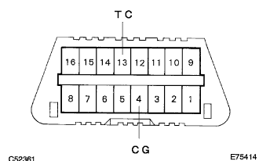
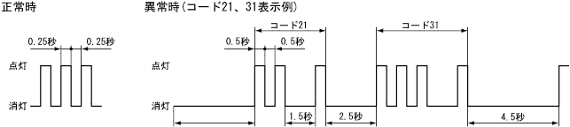

Pre-crash Safety System DTC Check / Clear |
With the IG OFF, connect SST (TaSCAN) to DLC3.
Turn IG ON.
Following the TaSCAN screen display, display the "System Diagnosis Menu/Pre-crash" screen and select "DTC".
Check the diagnostic trouble codes.
Turn IG OFF.
 |
Using SST, connect terminals 13 (TC) and 4 (CG) of the DLC3.
Turn IG ON.
Read the DTC (number of blinks of the "PCS" indicator light).

Turn IG OFF.
Disconnect terminals 13 (TC) and 4 (CG) of the DLC3.
With the IG OFF, connect SST (TaSCAN) to DLC3.
Turn IG ON.
Following the SST (TaSCAN) screen display, display the "System Diagnosis Menu/Pre-crash" screen and select "DTC".
Select "Clear" on the screen to clear the data.